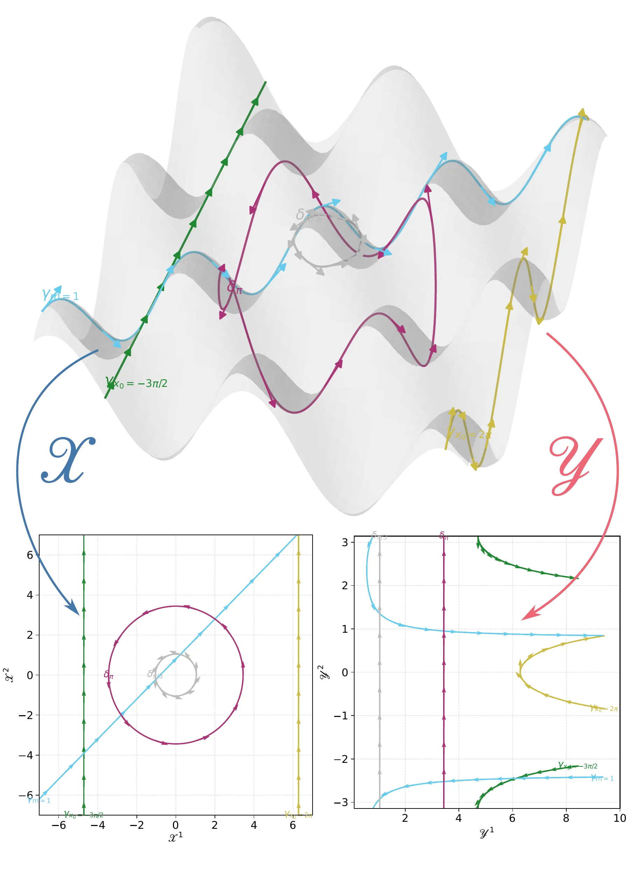
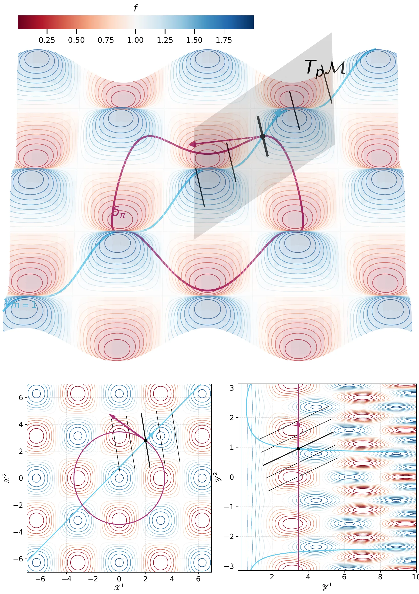
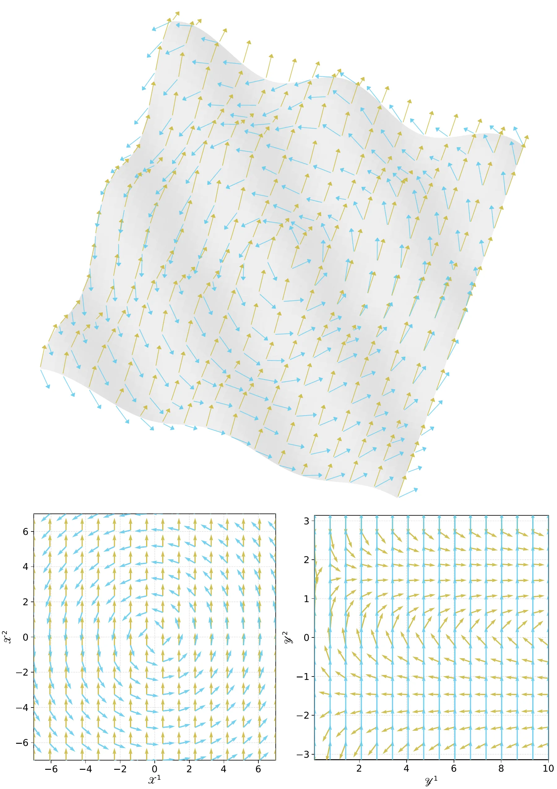
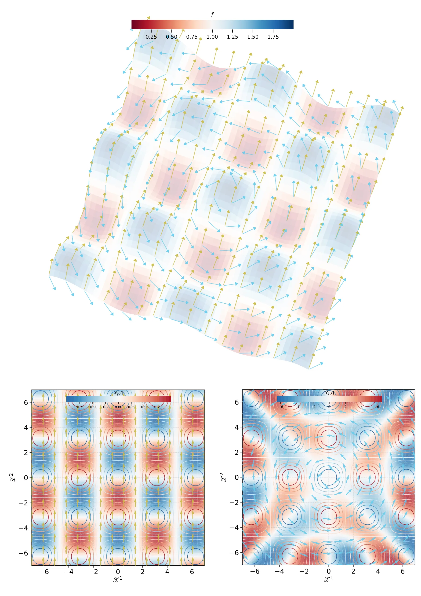

C.4 Example of Fields (§§5.1–5.3)
Appendix C • Examples
C.4 Example of Fields (§§5.1–5.3)
This appendix follows a single manifold from its definition as a set all the way up to vector fields, covector fields, their actions and a tensor field, so that every object introduced in the three sections above can be seen written out explicitly in two different charts. Point-level objects are written in the compact notation of Subsections 4.1.2 and 4.2.2, field-level objects in that of Section 5.3, and the Einstein summation convention is implied throughout.
C.4.1 The manifold
Let us define a 2-dim. smooth manifold \(\left( \mathcal{M}, \mathcal{O}_\mathcal{M}, \mathcal{A}_{C^\infty} \right)_2\) as follows.
The set \(\mathcal{M}\) is the graph of the height function \(h\): \begin{align*} \mathcal{M} \coloneqq \left\{ p = (a, b, c) \in \mathbb{R}^3 \;\middle|\; c = h(a,b) \right\}, \end{align*} where the height function \(h\) is \begin{align*} h(a,b) \coloneqq \frac{1}{2}\cos(a+b) + \frac{1}{2}\sin\left(a - b + \frac{\pi}{2}\right) + 1 = \cos a \, \cos b + 1, \end{align*} and the last equality lets us write every subsequent expression in a compact form.
The topology \(\mathcal{O}_\mathcal{M}\) is the one induced from the ambient space \(\left( \mathbb{R}^3, \mathcal{O}_{\mathbb{R}^3} \right)\): \begin{align*} \mathcal{O}_\mathcal{M} \coloneqq \left.\mathcal{O}_{\mathbb{R}^3}\right|_\mathcal{M} = \left\{ \mathcal{M} \cap \mathcal{W} \;\middle|\; \mathcal{W} \in \mathcal{O}_{\mathbb{R}^3} \right\}. \end{align*}
The atlas \(\mathcal{A} \coloneqq \left\{ (\mathcal{U}, \mathscr{X}), (\mathcal{V}, \mathscr{Y}) \right\}\) is defined by the two charts2: \[ \begin{array}{c@{\;\;} | @{\;\;} c} \textbf{Chart $(\mathcal{U}, \mathscr{X})$} & \textbf{Chart $(\mathcal{V}, \mathscr{Y})$} \\[6pt] \begin{aligned} \mathcal{U} &\coloneqq \mathcal{M} \\[2pt] \mathscr{X} \colon \mathcal{U} &\longrightarrow \mathscr{X}(\mathcal{U}) = \mathbb{R}^2 \\ p = (a,b,c) &\longmapsto \mathscr{X}(p) \coloneqq \left( a \,,\, b \right) \end{aligned} & \begin{aligned} \mathcal{V} &\coloneqq \mathcal{M} \setminus \left\{ a \leq 0, \, b = 0 \right\} \\[2pt] \mathscr{Y} \colon \mathcal{V} &\longrightarrow \mathscr{Y}(\mathcal{V}) = (0, \infty) \times (-\pi, \pi) \\ p = (a,b,c) &\longmapsto \mathscr{Y}(p) \coloneqq \left( \sqrt{a^2 + b^2} \,,\, \operatorname{atan2}(b, a) \right) \end{aligned} \end{array} \] so that the coordinate functions are \(\mathscr{X}^1(p) = a\), \(\mathscr{X}^2(p) = b\) and \(\mathscr{Y}^1(p) = \sqrt{a^2+b^2}\), \(\mathscr{Y}^2(p) = \operatorname{atan2}(b,a)\). Both chart maps are homeomorphisms onto their (open) images: \(\mathcal{M}\) is a graph over \(\mathbb{R}^2\), so \(\mathscr{X}\) is the restriction of the projection \((a,b,c) \mapsto (a,b)\), and \(\mathscr{Y}\) is that projection followed by polar coordinates. Their inverses are \begin{align*} \mathscr{X}^{-1} \colon \mathscr{X}(\mathcal{U}) &\longrightarrow \mathcal{U} \\ (\alpha_1, \alpha_2)_\mathcal{U} &\longmapsto \big( \alpha_1, \, \alpha_2, \, h(\alpha_1, \alpha_2) \big)_\mathcal{M} \end{align*} \begin{align*} \mathscr{Y}^{-1} \colon \mathscr{Y}(\mathcal{V}) &\longrightarrow \mathcal{V} \\ (\beta_1, \beta_2)_\mathcal{V} &\longmapsto \big( \beta_1 \cos \beta_2, \, \beta_1 \sin \beta_2, \, h(\beta_1 \cos \beta_2, \beta_1 \sin \beta_2) \big)_\mathcal{M}. \end{align*}
Since \(\mathcal{U} = \mathcal{M}\), the overlap of the two chart domains is \(\mathcal{U} \cap \mathcal{V} = \mathcal{V}\), and the two chart transition maps are \begin{align*} \textrm{\runic ᛖ}_{\mathcal{V}\mathcal{U}} \colon \mathscr{Y}(\mathcal{U} \cap \mathcal{V}) &\longrightarrow \mathscr{X}(\mathcal{U} \cap \mathcal{V}) \\ \left( \beta_1 \,,\, \beta_2 \right)_\mathcal{V} &\longmapsto \left( \mathscr{X} \circ \mathscr{Y}^{-1} \right) \left( \beta_1 \,,\, \beta_2 \right)_\mathcal{V} = \left( \beta_1 \cos \beta_2 \,,\, \beta_1 \sin \beta_2 \right)_\mathcal{U} \end{align*} \begin{align*} \textrm{\runic ᛖ}_{\mathcal{U}\mathcal{V}} \colon \mathscr{X}(\mathcal{U} \cap \mathcal{V}) &\longrightarrow \mathscr{Y}(\mathcal{U} \cap \mathcal{V}) \\ \left( \alpha_1 \,,\, \alpha_2 \right)_\mathcal{U} &\longmapsto \left( \mathscr{Y} \circ \mathscr{X}^{-1} \right) \left( \alpha_1 \,,\, \alpha_2 \right)_\mathcal{U} = \left( \sqrt{\alpha_1^2 + \alpha_2^2} \,,\, \operatorname{atan2}(\alpha_2, \alpha_1) \right)_\mathcal{V}. \end{align*} Both are \(C^\infty\) on \(\mathscr{Y}(\mathcal{V})\) and \(\mathscr{X}(\mathcal{V})\) respectively (on the latter the branch cut has been removed, and \(\alpha_1^2 + \alpha_2^2 > 0\) there), so the atlas is \(C^\infty\)-compatible, \(\mathcal{A} \equiv \mathcal{A}_{C^\infty}\), and \(\left( \mathcal{M}, \mathcal{O}_\mathcal{M}, \mathcal{A}_{C^\infty} \right)_2\) is a 2-dim. smooth manifold.
C.4.2 Jacobians and transformation laws
To relate the two charts we need the Jacobians of the transition maps at a point \(p \in \mathcal{U} \cap \mathcal{V}\). Writing \(\mathscr{X}(p) = (\alpha_1, \alpha_2)_\mathcal{U}\), \(\mathscr{Y}(p) = (\beta_1, \beta_2)_\mathcal{V}\): \begin{align*} \left( \textrm{\runic ᛞ}_{\mathcal{V}\mathcal{U}} \right)^i_j\left( \mathscr{X}(p) \right) = \left( \frac{\partial \mathscr{Y}^i}{\partial \mathscr{X}^j} \right)_p = \partial_j \left[ \mathscr{Y}^i \circ \mathscr{X}^{-1} \right] \left( \mathscr{X}(p) \right) = \begin{bmatrix} \dfrac{\alpha_1}{\sqrt{\alpha_1^2 + \alpha_2^2}} & \dfrac{\alpha_2}{\sqrt{\alpha_1^2 + \alpha_2^2}} \\[10pt] -\dfrac{\alpha_2}{\alpha_1^2 + \alpha_2^2} & \dfrac{\alpha_1}{\alpha_1^2 + \alpha_2^2} \end{bmatrix}_\mathcal{V}, \end{align*} since \begin{align*} \partial_1 \textrm{\runic ᛖ}_{\mathcal{U}\mathcal{V}} \left( \begin{array}{c} \alpha_1 \\ \alpha_2 \end{array} \right)_\mathcal{U} = \left( \begin{array}{c} \alpha_1 / \sqrt{\alpha_1^2 + \alpha_2^2} \\ -\alpha_2 / (\alpha_1^2 + \alpha_2^2) \end{array} \right)_\mathcal{V} \quad ; \quad \partial_2 \textrm{\runic ᛖ}_{\mathcal{U}\mathcal{V}} \left( \begin{array}{c} \alpha_1 \\ \alpha_2 \end{array} \right)_\mathcal{U} = \left( \begin{array}{c} \alpha_2 / \sqrt{\alpha_1^2 + \alpha_2^2} \\ \alpha_1 / (\alpha_1^2 + \alpha_2^2) \end{array} \right)_\mathcal{V}. \end{align*}
Correspondingly, for the inverse transition map: \begin{align*} \left( \textrm{\runic ᛞ}_{\mathcal{U}\mathcal{V}} \right)^i_j\left( \mathscr{Y}(p) \right) = \left( \frac{\partial \mathscr{X}^i}{\partial \mathscr{Y}^j} \right)_p = \partial_j \left[ \mathscr{X}^i \circ \mathscr{Y}^{-1} \right] \left( \mathscr{Y}(p) \right) = \begin{bmatrix} \cos \beta_2 & -\beta_1 \sin \beta_2 \\[4pt] \sin \beta_2 & \beta_1 \cos \beta_2 \end{bmatrix}_\mathcal{U}, \end{align*} since \begin{align*} \partial_1 \textrm{\runic ᛖ}_{\mathcal{V}\mathcal{U}} \left( \begin{array}{c} \beta_1 \\ \beta_2 \end{array} \right)_\mathcal{V} = \left( \begin{array}{c} \cos \beta_2 \\ \sin \beta_2 \end{array} \right)_\mathcal{U} \quad ; \quad \partial_2 \textrm{\runic ᛖ}_{\mathcal{V}\mathcal{U}} \left( \begin{array}{c} \beta_1 \\ \beta_2 \end{array} \right)_\mathcal{V} = \left( \begin{array}{c} -\beta_1 \sin \beta_2 \\ \beta_1 \cos \beta_2 \end{array} \right)_\mathcal{U}. \end{align*} As a consistency check, using \(\alpha_1 = \beta_1 \cos \beta_2\) and \(\alpha_2 = \beta_1 \sin \beta_2\), \begin{align*} \left( \textrm{\runic ᛞ}_{\mathcal{U}\mathcal{V}} \right)^i_{k}\left( \mathscr{Y}(p) \right) \cdot \left( \textrm{\runic ᛞ}_{\mathcal{V}\mathcal{U}} \right)^k_{j}\left( \mathscr{X}(p) \right) = \delta^i_j. \end{align*}
With these two matrices, the transformation laws derived in Subsections 4.1.1 and 4.2.1 become completely explicit. For the basis vectors of \(T_p\mathcal{M}\) — covariant, \((\partial x_i)_p = \left( \textrm{\runic ᛞ}_{\mathcal{V}\mathcal{U}} \right)^j_{i}\left( \mathscr{X}(p) \right) \cdot (\partial y_j)_p\) and \((\partial y_j)_p = \left( \textrm{\runic ᛞ}_{\mathcal{U}\mathcal{V}} \right)^i_{j}\left( \mathscr{Y}(p) \right) \cdot (\partial x_i)_p\): \begin{gather*} \begin{cases} (\partial x_1)_p = \dfrac{\alpha_1}{\sqrt{\alpha_1^2 + \alpha_2^2}} \cdot (\partial y_1)_p - \dfrac{\alpha_2}{\alpha_1^2 + \alpha_2^2} \cdot (\partial y_2)_p \\[10pt] (\partial x_2)_p = \dfrac{\alpha_2}{\sqrt{\alpha_1^2 + \alpha_2^2}} \cdot (\partial y_1)_p + \dfrac{\alpha_1}{\alpha_1^2 + \alpha_2^2} \cdot (\partial y_2)_p \end{cases} \\[8pt] \begin{cases} (\partial y_1)_p = \cos \beta_2 \cdot (\partial x_1)_p + \sin \beta_2 \cdot (\partial x_2)_p \\[10pt] (\partial y_2)_p = -\beta_1 \sin \beta_2 \cdot (\partial x_1)_p + \beta_1 \cos \beta_2 \cdot (\partial x_2)_p \end{cases} \end{gather*}
For the basis covectors of \(T^*_p\mathcal{M}\) — contravariant, \((dx^i)_p = \left( \textrm{\runic ᛞ}_{\mathcal{U}\mathcal{V}} \right)^i_j\left( \mathscr{Y}(p) \right) \cdot (dy^j)_p\) and \((dy^i)_p = \left( \textrm{\runic ᛞ}_{\mathcal{V}\mathcal{U}} \right)^i_j\left( \mathscr{X}(p) \right) \cdot (dx^j)_p\): \begin{gather*} \begin{cases} (dx^1)_p = \cos \beta_2 \cdot (dy^1)_p - \beta_1 \sin \beta_2 \cdot (dy^2)_p \\[10pt] (dx^2)_p = \sin \beta_2 \cdot (dy^1)_p + \beta_1 \cos \beta_2 \cdot (dy^2)_p \end{cases} \\[8pt] \begin{cases} (dy^1)_p = \dfrac{\alpha_1}{\sqrt{\alpha_1^2 + \alpha_2^2}} \cdot (dx^1)_p + \dfrac{\alpha_2}{\sqrt{\alpha_1^2 + \alpha_2^2}} \cdot (dx^2)_p \\[10pt] (dy^2)_p = -\dfrac{\alpha_2}{\alpha_1^2 + \alpha_2^2} \cdot (dx^1)_p + \dfrac{\alpha_1}{\alpha_1^2 + \alpha_2^2} \cdot (dx^2)_p \end{cases} \end{gather*}
For the components of a vector \(\mathcal{X}_p \in T_p\mathcal{M}\) — contravariant, \(x^i_p = \left( \textrm{\runic ᛞ}_{\mathcal{U}\mathcal{V}} \right)^i_j\left( \mathscr{Y}(p) \right) \cdot y^j_p\) and \(y^i_p = \left( \textrm{\runic ᛞ}_{\mathcal{V}\mathcal{U}} \right)^i_j\left( \mathscr{X}(p) \right) \cdot x^j_p\): \begin{gather*} \begin{cases} x^1_p = \cos \beta_2 \cdot y^1_p - \beta_1 \sin \beta_2 \cdot y^2_p \\[10pt] x^2_p = \sin \beta_2 \cdot y^1_p + \beta_1 \cos \beta_2 \cdot y^2_p \end{cases} \\[8pt] \begin{cases} y^1_p = \dfrac{\alpha_1}{\sqrt{\alpha_1^2 + \alpha_2^2}} \cdot x^1_p + \dfrac{\alpha_2}{\sqrt{\alpha_1^2 + \alpha_2^2}} \cdot x^2_p \\[10pt] y^2_p = -\dfrac{\alpha_2}{\alpha_1^2 + \alpha_2^2} \cdot x^1_p + \dfrac{\alpha_1}{\alpha_1^2 + \alpha_2^2} \cdot x^2_p \end{cases} \end{gather*}
For the components of a covector \(\mathsf{X}_p \in T^*_p\mathcal{M}\) — covariant, \(\mathtt{y}_j^p = \left( \textrm{\runic ᛞ}_{\mathcal{U}\mathcal{V}} \right)^i_j\left( \mathscr{Y}(p) \right) \cdot \mathtt{x}_i^p\) and \(\mathtt{x}_j^p = \left( \textrm{\runic ᛞ}_{\mathcal{V}\mathcal{U}} \right)^i_j\left( \mathscr{X}(p) \right) \cdot \mathtt{y}_i^p\): \begin{gather*} \begin{cases} \mathtt{y}_1^p = \cos \beta_2 \cdot \mathtt{x}_1^p + \sin \beta_2 \cdot \mathtt{x}_2^p \\[10pt] \mathtt{y}_2^p = -\beta_1 \sin \beta_2 \cdot \mathtt{x}_1^p + \beta_1 \cos \beta_2 \cdot \mathtt{x}_2^p \end{cases} \\[8pt] \begin{cases} \mathtt{x}_1^p = \dfrac{\alpha_1}{\sqrt{\alpha_1^2 + \alpha_2^2}} \cdot \mathtt{y}_1^p - \dfrac{\alpha_2}{\alpha_1^2 + \alpha_2^2} \cdot \mathtt{y}_2^p \\[10pt] \mathtt{x}_2^p = \dfrac{\alpha_2}{\sqrt{\alpha_1^2 + \alpha_2^2}} \cdot \mathtt{y}_1^p + \dfrac{\alpha_1}{\alpha_1^2 + \alpha_2^2} \cdot \mathtt{y}_2^p \end{cases} \end{gather*}
Note that the four laws come in two pairs: basis vectors transform exactly like covector components (both with \(\textrm{\runic ᛞ}_{\mathcal{V}\mathcal{U}}\) in one direction and \(\textrm{\runic ᛞ}_{\mathcal{U}\mathcal{V}}\) in the other, contracted on the upper index), and basis covectors exactly like vector components (contracted on the lower index).
C.4.3 Curves and velocities
With all the machinery in place we can now have some fun. Consider the two families of curves (\(x_0 \in \mathbb{R}\) and \(r_0 > 0\) fixed): \begin{align*} \gamma_{x_0} \colon \mathbb{R} &\longrightarrow \mathcal{M} & \delta_{r_0} \colon \mathbb{R} &\longrightarrow \mathcal{M} \\ \lambda &\longmapsto \gamma_{x_0}(\lambda) \coloneqq \big( x_0, \, \lambda, \, h(x_0, \lambda) \big)_\mathcal{M} & \lambda &\longmapsto \delta_{r_0}(\lambda) \coloneqq \big( r_0 \cos \lambda, \, r_0 \sin \lambda, \, h(r_0 \cos \lambda, r_0 \sin \lambda) \big)_\mathcal{M}. \end{align*} The first family sweeps the manifold with “vertical” curves, the second one with “circles”. For \(x_0 > 0\), \(\gamma_{x_0}\) stays inside \(\mathcal{V}\), while for \(x_0 \leq 0\) it crosses the branch cut at \(\lambda = 0\); \(\delta_{r_0}\) stays inside \(\mathcal{V}\) for \(\lambda \in (-\pi, \pi)\) and leaves it when it crosses the branch cut. Following Subsection 4.1.2, we write \(\mathcal{X}_p \coloneqq v_{\gamma, p}\) and \(\mathcal{Y}_p \coloneqq v_{\delta, p}\) for their velocities at a point \(p\).
The curve \(\gamma_{x_0}\). Its chart representative in \((\mathcal{U}, \mathscr{X})\) and the corresponding velocity at \(p = \gamma_{x_0}(\lambda_0)\) are \begin{align*} \left( \mathscr{X} \circ \gamma_{x_0} \right)(\lambda) = \left( \begin{array}{c} x_0 \\ \lambda \end{array} \right)_\mathcal{U} \;\Longrightarrow\; \left( \begin{array}{c} x^1_p \\ x^2_p \end{array} \right) \coloneqq \left( \mathscr{X} \circ \gamma_{x_0} \right)'(\lambda_0) = \left( \begin{array}{c} 0 \\ 1 \end{array} \right) \;\longrightarrow\; \mathcal{X}_p = (\partial x_2)_p. \end{align*} The same velocity can be computed through \((\mathcal{V}, \mathscr{Y})\), for \(p \in \mathcal{V}\): \begin{align*} \left( \mathscr{Y} \circ \gamma_{x_0} \right)(\lambda) = \left( \begin{array}{c} \sqrt{x_0^2 + \lambda^2} \\ \operatorname{atan2}(\lambda, x_0) \end{array} \right)_\mathcal{V} \;\Longrightarrow\; \left( \begin{array}{c} y^1_p \\ y^2_p \end{array} \right) \coloneqq \left( \mathscr{Y} \circ \gamma_{x_0} \right)'(\lambda_0) = \left( \begin{array}{c} \dfrac{\lambda_0}{\sqrt{x_0^2 + \lambda_0^2}} \\[10pt] \dfrac{x_0}{x_0^2 + \lambda_0^2} \end{array} \right) \;\longrightarrow\; \dots \end{align*} \begin{align*} \dots \;\longrightarrow\; \mathcal{X}_p = \frac{\lambda_0}{\sqrt{x_0^2 + \lambda_0^2}} \cdot (\partial y_1)_p + \frac{x_0}{x_0^2 + \lambda_0^2} \cdot (\partial y_2)_p, \end{align*} and this is exactly what the transformation law of the previous subsection produces, since at \(p = \gamma_{x_0}(\lambda_0)\) we have \(\alpha_1 = x_0\) and \(\alpha_2 = \lambda_0\): \begin{align*} \left( \begin{array}{c} y^1_p \\ y^2_p \end{array} \right) = \textrm{\runic ᛞ}_{\mathcal{V}\mathcal{U}}\left( \mathscr{X}(p) \right) \left( \begin{array}{c} 0 \\ 1 \end{array} \right) = \left( \begin{array}{c} \alpha_2 / \sqrt{\alpha_1^2 + \alpha_2^2} \\ \alpha_1 / (\alpha_1^2 + \alpha_2^2) \end{array} \right) = \left( \begin{array}{c} \lambda_0 / \sqrt{x_0^2 + \lambda_0^2} \\ x_0 / (x_0^2 + \lambda_0^2) \end{array} \right). \quad \checkmark \end{align*}
The curve \(\delta_{r_0}\). Now it is the polar chart that trivializes the computation. For \(\lambda \in (-\pi, \pi)\)3, at \(p = \delta_{r_0}(\lambda_0)\): \begin{align*} \left( \mathscr{Y} \circ \delta_{r_0} \right)(\lambda) = \left( \begin{array}{c} r_0 \\ \lambda \end{array} \right)_\mathcal{V} \;\Longrightarrow\; \left( \begin{array}{c} \tilde{y}^1_p \\ \tilde{y}^2_p \end{array} \right) \coloneqq \left( \mathscr{Y} \circ \delta_{r_0} \right)'(\lambda_0) = \left( \begin{array}{c} 0 \\ 1 \end{array} \right) \;\longrightarrow\; \mathcal{Y}_p = (\partial y_2)_p, \end{align*} while in the cartesian chart \begin{align*} \left( \mathscr{X} \circ \delta_{r_0} \right)(\lambda) = \left( \begin{array}{c} r_0 \cos \lambda \\ r_0 \sin \lambda \end{array} \right)_\mathcal{U} \;\Longrightarrow\; \left( \begin{array}{c} \tilde{x}^1_p \\ \tilde{x}^2_p \end{array} \right) \coloneqq \left( \mathscr{X} \circ \delta_{r_0} \right)'(\lambda_0) = \left( \begin{array}{c} -r_0 \sin \lambda_0 \\ r_0 \cos \lambda_0 \end{array} \right) \;\longrightarrow\; \dots \end{align*} \begin{align*} \dots \;\longrightarrow\; \mathcal{Y}_p = -r_0 \sin \lambda_0 \cdot (\partial x_1)_p + r_0 \cos \lambda_0 \cdot (\partial x_2)_p, \end{align*} which is again the second column of \(\textrm{\runic ᛞ}_{\mathcal{U}\mathcal{V}}\left( \mathscr{Y}(p) \right)\), i.e. the transformation law applied to \((0,1)\), with \(\beta_1 = r_0\) and \(\beta_2 = \lambda_0\). In terms of the chart coordinates of the base point, \(\alpha_1 = r_0 \cos \lambda_0\) and \(\alpha_2 = r_0 \sin \lambda_0\), the same velocity reads \(\mathcal{Y}_p = -\alpha_2 \cdot (\partial x_1)_p + \alpha_1 \cdot (\partial x_2)_p\), an expression we will reuse below.

C.4.4 A scalar field, its differential and the action of velocities on it
Let us now define a smooth scalar field \(f \in C^\infty(\mathcal{M})\) on our manifold: \begin{align*} f \colon \mathcal{M} &\longrightarrow \mathbb{R} \\ p = (a, b, c) &\longmapsto f(p) \coloneqq c = \cos a \, \cos b + 1, \end{align*} that is, the simplest possible choice: the “height” of each point. We could identify it with a scalar field — a \((0,0)\)-tensor field — such as the temperature at each point of \(\mathcal{M}\).
Its chart representatives, which are the objects we can actually differentiate, are \begin{align*} \left( f \circ \mathscr{X}^{-1} \right) \colon \mathscr{X}(\mathcal{U}) &\longrightarrow \mathbb{R} & \left( f \circ \mathscr{Y}^{-1} \right) \colon \mathscr{Y}(\mathcal{V}) &\longrightarrow \mathbb{R} \\ (\alpha_1, \alpha_2) &\longmapsto \cos \alpha_1 \cos \alpha_2 + 1 & (\beta_1, \beta_2) &\longmapsto \cos \left( \beta_1 \cos \beta_2 \right) \cos \left( \beta_1 \sin \beta_2 \right) + 1, \end{align*} and their partial derivatives at \(\mathscr{X}(p)\) and \(\mathscr{Y}(p)\) are, by Subsection 4.2.1, precisely the components of the covector \((df)_p = \mathtt{x}_i^p \cdot (dx^i)_p = \mathtt{y}_i^p \cdot (dy^i)_p\): \begin{align*} \mathtt{x}_1^p = \partial_1 \left[ f \circ \mathscr{X}^{-1} \right] (\alpha_1, \alpha_2) &= -\sin \alpha_1 \cos \alpha_2, & \mathtt{x}_2^p = \partial_2 \left[ f \circ \mathscr{X}^{-1} \right] (\alpha_1, \alpha_2) &= -\cos \alpha_1 \sin \alpha_2, \end{align*} \begin{align*} \mathtt{y}_1^p = \partial_1 \left[ f \circ \mathscr{Y}^{-1} \right] (\beta_1, \beta_2) &= -\frac{\alpha_1 \sin \alpha_1 \cos \alpha_2 + \alpha_2 \cos \alpha_1 \sin \alpha_2}{\sqrt{\alpha_1^2 + \alpha_2^2}}, \\[6pt] \mathtt{y}_2^p = \partial_2 \left[ f \circ \mathscr{Y}^{-1} \right] (\beta_1, \beta_2) &= \alpha_2 \sin \alpha_1 \cos \alpha_2 - \alpha_1 \cos \alpha_1 \sin \alpha_2, \end{align*} where in the last two lines we abbreviated \(\alpha_1 = \beta_1 \cos \beta_2\), \(\alpha_2 = \beta_1 \sin \beta_2\) and \(\sqrt{\alpha_1^2 + \alpha_2^2} = \beta_1\) to keep the expressions readable. The reader may check that they are related by the covariant transformation law of Subsection C.4.2.
Evaluating \(f\) along the curves gives two ordinary functions of one real variable: \begin{align*} \left( f \circ \gamma_{x_0} \right)(\lambda) &= \cos x_0 \, \cos \lambda + 1, \\ \left( f \circ \delta_{r_0} \right)(\lambda) &= \cos \left( r_0 \cos \lambda \right) \cos \left( r_0 \sin \lambda \right) + 1, \end{align*} and we can now compute the action of the velocities on \(f\) without any chart at all, directly from the definition \(v_{\gamma, p}(f) \coloneqq \left( f \circ \gamma \right)'(\lambda_0)\): \begin{align*} \mathcal{X}_p(f) &= \left( f \circ \gamma_{x_0} \right)'(\lambda_0) = -\cos x_0 \, \sin \lambda_0, \\[6pt] \mathcal{Y}_p(f) &= \left( f \circ \delta_{r_0} \right)'(\lambda_0) = r_0 \sin \lambda_0 \, \sin\left(r_0 \cos \lambda_0\right) \, \cos \left(r_0 \sin \lambda_0\right) - r_0 \cos \lambda_0 \, \cos \left(r_0 \cos \lambda_0\right) \, \sin \left(r_0 \sin \lambda_0\right) \\ &= \alpha_2 \sin \alpha_1 \cos \alpha_2 - \alpha_1 \cos \alpha_1 \sin \alpha_2, \end{align*} with \(\alpha_1 = r_0 \cos \lambda_0\) and \(\alpha_2 = r_0 \sin \lambda_0\) in the last line. Of course the same numbers must come out of the chart expressions \(\mathcal{X}_p(f) = (df)_p(\mathcal{X}_p) = x^i_p \, \mathtt{x}_i^p = y^i_p \, \mathtt{y}_i^p\). For \(\gamma_{x_0}\) in the chart \((\mathcal{U}, \mathscr{X})\), with \((\alpha_1, \alpha_2) = (x_0, \lambda_0)\): \begin{align*} \mathcal{X}_p(f) = x^i_p \, \mathtt{x}_i^p = 0 \cdot \left( -\sin x_0 \cos \lambda_0 \right) + 1 \cdot \left( -\cos x_0 \sin \lambda_0 \right) = -\cos x_0 \sin \lambda_0, \quad \checkmark \end{align*} and in the chart \((\mathcal{V}, \mathscr{Y})\) the two contributions conspire to give the same result: \begin{align*} \mathcal{X}_p(f) = y^i_p \, \mathtt{y}_i^p &= \frac{\alpha_2}{\sqrt{\alpha_1^2 + \alpha_2^2}} \cdot \left( -\frac{\alpha_1 \sin \alpha_1 \cos \alpha_2 + \alpha_2 \cos \alpha_1 \sin \alpha_2}{\sqrt{\alpha_1^2 + \alpha_2^2}} \right) \\ &\quad + \frac{\alpha_1}{\alpha_1^2 + \alpha_2^2} \cdot \left( \alpha_2 \sin \alpha_1 \cos \alpha_2 - \alpha_1 \cos \alpha_1 \sin \alpha_2 \right) \\ &= -\frac{\alpha_2^2 + \alpha_1^2}{\alpha_1^2 + \alpha_2^2} \cos \alpha_1 \sin \alpha_2 = -\cos x_0 \sin \lambda_0. \quad \checkmark \end{align*} For \(\delta_{r_0}\) it is now the polar chart that makes the check immediate: \(\mathcal{Y}_p(f) = \tilde{y}^i_p \, \mathtt{y}_i^p = \mathtt{y}_2^p\), which is the chart-free result above. ✓This is the whole point of the construction: the velocity is an intrinsic object, the components and the partial derivatives are not, and the chart dependence cancels in the contraction.

C.4.5 Vector fields
Each point of \(\mathcal{M}\) lies on exactly one curve of each family (taking \(\delta_0\) to be the constant curve at the origin), so each family defines a smooth vector field, i.e. a smooth section of \(T\mathcal{M}\) assigning to every point the velocity of the curve of the family passing through it: \[ \begin{array}{c@{\quad} | @{\quad} c} \begin{aligned} \mathcal{X} \colon \mathcal{M} &\longrightarrow T\mathcal{M} \\ p = (a,b,c) &\longmapsto \mathcal{X}(p) \coloneqq v_{\gamma_{a}, p} \end{aligned} & \begin{aligned} \mathcal{Y} \colon \mathcal{M} &\longrightarrow T\mathcal{M} \\ p = (a,b,c) &\longmapsto \mathcal{Y}(p) \coloneqq v_{\delta_{\sqrt{a^2+b^2}}, p} \end{aligned} \end{array} \] so that \(\mathcal{X}(p) = \mathcal{X}_p\) and \(\mathcal{Y}(p) = \mathcal{Y}_p\) are the velocities of the previous subsections. In each case the velocity is evaluated at the parameter value at which the corresponding curve passes through \(p\), namely \(\lambda_0 = b\) for \(\gamma_a\) and \(\lambda_0 = \operatorname{atan2}(b,a)\) for \(\delta_{\sqrt{a^2+b^2}}\) (at the origin \(\delta_0\) is constant and \(\mathcal{Y}\) vanishes). In both cases \(\left( \pi \circ \mathcal{X} \right)(p) = p\) and \(\left( \pi \circ \mathcal{Y} \right)(p) = p\) by construction, as a section must satisfy.
Their component functions, \(X^i \coloneqq \left. \mathcal{X} \right|_\mathcal{U} \left\lfloor \mathscr{X}^i \right\rceil\) and \(Y^i \coloneqq \left. \mathcal{X} \right|_\mathcal{V} \left\lfloor \mathscr{Y}^i \right\rceil\) for \(\mathcal{X}\), and \(\tilde{X}^i\), \(\tilde{Y}^i\) for \(\mathcal{Y}\), follow from Subsection C.4.3 by reading the components of the velocities at a generic point \(p = (a, b, c)\). For \(\mathcal{X}\), \begin{align*} \left. \mathcal{X} \right|_\mathcal{U} = X^i \, \partial x_i = \partial x_2 \quad ; \quad \left. \mathcal{X} \right|_\mathcal{V} = Y^i \, \partial y_i = \frac{b}{\sqrt{a^2 + b^2}} \, \partial y_1 + \frac{a}{a^2 + b^2} \, \partial y_2, \end{align*} and for \(\mathcal{Y}\), \begin{align*} \left. \mathcal{Y} \right|_\mathcal{U} = \tilde{X}^i \, \partial x_i = -b \, \partial x_1 + a \, \partial x_2 \quad ; \quad \left. \mathcal{Y} \right|_\mathcal{V} = \tilde{Y}^i \, \partial y_i = \partial y_2, \end{align*} where the component functions are read as functions of \(p = (a, b, c)\), and the basis fields are the chart-induced ones, \(\partial x_i = \partial / \partial \mathscr{X}^i\) and \(\partial y_i = \partial / \partial \mathscr{Y}^i\). Each of the two fields is therefore an element of the chart-induced frame of one of the two charts, and an honest field with non-constant component functions in the other one. Two remarks are worth making here:
\(\left. \mathcal{Y} \right|_\mathcal{V} = \partial y_2\) is only a frame element over \(\mathcal{V}\), but the field itself extends smoothly to all of \(\mathcal{M}\): its component functions in the chart \((\mathcal{U}, \mathscr{X})\), \((\tilde{X}^1, \tilde{X}^2) = (-b, a)\), are perfectly smooth across the branch cut. What does not extend is the frame: at the origin \(a = b = 0\) the field vanishes, so it cannot be part of any frame there.
This is the local-versus-global statement of Section 5.1 in miniature: chart-induced frames always exist over a chart domain, and nothing guarantees that any of them extends to the whole manifold.
Finally, in the tangent-bundle charts \(\xi_\mathscr{X}\) and \(\xi_\mathscr{Y}\) of Section 5.1 each of these fields is described, at the point \(p = (a, b, c)\), by \(2 \dim \mathcal{M} = 4\) numbers, the first two of which locate the base point and the last two of which are the components of the vector sitting over it: \begin{align*} \xi_\mathscr{X} \left( \mathcal{X}_p \right) = \left( \begin{array}{c} \left( a \,,\, b \right) \\ \left( 0 \,,\, 1 \right) \end{array} \right) \quad ; \quad \xi_\mathscr{Y} \left( \mathcal{X}_p \right) = \left( \begin{array}{c} \left( \sqrt{a^2+b^2} \,,\, \operatorname{atan2}(b,a) \right) \\[4pt] \left( \dfrac{b}{\sqrt{a^2+b^2}} \,,\, \dfrac{a}{a^2+b^2} \right) \end{array} \right), \end{align*} \begin{align*} \xi_\mathscr{X} \left( \mathcal{Y}_p \right) = \left( \begin{array}{c} \left( a \,,\, b \right) \\ \left( -b \,,\, a \right) \end{array} \right) \quad ; \quad \xi_\mathscr{Y} \left( \mathcal{Y}_p \right) = \left( \begin{array}{c} \left( \sqrt{a^2+b^2} \,,\, \operatorname{atan2}(b,a) \right) \\ \left( 0 \,,\, 1 \right) \end{array} \right). \end{align*}

C.4.6 Action of the vector fields on the scalar field
We can now evaluate the action \(\mathcal{X} \left\lfloor f \right\rceil\) of these fields upon the scalar field \(f\) defined above. By definition this is the function that assigns to each point the directional derivative of \(f\) there, \(\mathcal{X} \left\lfloor f \right\rceil(p) \coloneqq \mathcal{X}_p(f)\), and in a chart it is the contraction of the component functions with the components \(\mathtt{x}_i^p = \partial_i \left[ f \circ \mathscr{X}^{-1} \right] \left( \mathscr{X}(p) \right)\) of Subsection C.4.4, now evaluated at \((\alpha_1, \alpha_2) = (a, b)\). For \(\mathcal{X}\), whose component functions in \((\mathcal{U}, \mathscr{X})\) are \((0, 1)\): \begin{align*} \mathcal{X} \left\lfloor f \right\rceil \colon \mathcal{M} &\longrightarrow \mathbb{R} \\ p = (a,b,c) &\longmapsto \mathcal{X} \left\lfloor f \right\rceil(p) = X^i(p) \cdot \mathtt{x}_i^p = 0 \cdot \left( -\sin a \cos b \right) + 1 \cdot \left( -\cos a \sin b \right) = -\cos a \, \sin b, \end{align*} and for \(\mathcal{Y}\), whose component functions in the same chart are \((-b, a)\): \begin{align*} \mathcal{Y} \left\lfloor f \right\rceil \colon \mathcal{M} &\longrightarrow \mathbb{R} \\ p = (a,b,c) &\longmapsto \mathcal{Y} \left\lfloor f \right\rceil(p) = \tilde{X}^i(p) \cdot \mathtt{x}_i^p = (-b) \left( -\sin a \cos b \right) + a \left( -\cos a \sin b \right) \\ &\qquad = b \, \sin a \, \cos b - a \, \cos a \, \sin b. \end{align*} Both results are again smooth functions on \(\mathcal{M}\), i.e. elements of \(C^\infty(\mathcal{M})\), as they must be: a vector field eats an element of the ring and returns, \(\mathbb{R}\)-linearly, another element of the ring.
Computing the same action through the other chart is a useful exercise. For \(\mathcal{Y}\), whose component functions in \((\mathcal{V}, \mathscr{Y})\) are \((0,1)\), \begin{align*} \mathcal{Y} \left\lfloor f \right\rceil(p) = \tilde{Y}^i(p) \cdot \mathtt{y}_i^p = 0 \cdot \mathtt{y}_1^p + 1 \cdot \mathtt{y}_2^p = b \, \sin a \, \cos b - a \, \cos a \, \sin b, \quad \checkmark \end{align*} which is the same function, as it has to be. Note also where these functions vanish: \(\mathcal{X} \left\lfloor f \right\rceil = 0\) wherever the field is tangent to a level set of \(f\), which here happens along \(b = 0, \pm\pi, \dots\) and \(a = \pm \pi/2, \pm 3\pi/2, \dots\); there the flow of the field neither climbs nor descends the “eggs”.

C.4.7 A covector field
The simplest way of producing a covector field is to take the differential of a scalar field, so let us consider \begin{align*} df \colon \mathcal{M} &\longrightarrow T^*\mathcal{M} \\ p &\longmapsto df(p) \coloneqq (df)_p, \end{align*} which trivially satisfies \(\left( \pi^* \circ df \right) = \mathbb{I}_\mathcal{M}\). Its component functions, \(\mathtt{X}_i \coloneqq \left. df \right|_\mathcal{U} \left\lceil \partial x_i \right\rfloor\) and \(\mathtt{Y}_i \coloneqq \left. df \right|_\mathcal{V} \left\lceil \partial y_i \right\rfloor\) (Section 5.3), return at each point the components of Subsection C.4.4, \(\mathtt{X}_i(p) = \mathtt{x}_i^p\) and \(\mathtt{Y}_i(p) = \mathtt{y}_i^p\), so that in each chart \begin{align*} \left. df \right|_\mathcal{U} &= \mathtt{X}_i \, dx^i = -\sin a \cos b \; dx^1 - \cos a \sin b \; dx^2, \\[6pt] \left. df \right|_\mathcal{V} &= \mathtt{Y}_i \, dy^i = -\frac{a \sin a \cos b + b \cos a \sin b}{\sqrt{a^2 + b^2}} \; dy^1 + \left( b \sin a \cos b - a \cos a \sin b \right) dy^2, \end{align*} with the component functions read as functions of \(p = (a, b, c)\), and \(dx^i = d\mathscr{X}^i\), \(dy^i = d\mathscr{Y}^i\) the chart-induced basis covector fields. These two expressions are of course related by the transformation law for covector component functions of Section 5.3, \(\mathtt{Y}_j = \left( \partial \mathscr{X}^i / \partial \mathscr{Y}^j \right) \mathtt{X}_i\), where the entries of \(\textrm{\runic ᛞ}_{\mathcal{U}\mathcal{V}}\) are now the functions \(\partial \mathscr{X}^1 / \partial \mathscr{Y}^1 = a / \sqrt{a^2+b^2}\), \(\partial \mathscr{X}^2 / \partial \mathscr{Y}^1 = b / \sqrt{a^2+b^2}\), \(\partial \mathscr{X}^1 / \partial \mathscr{Y}^2 = -b\) and \(\partial \mathscr{X}^2 / \partial \mathscr{Y}^2 = a\): \begin{align*} \mathtt{Y}_1 &= \frac{a}{\sqrt{a^2 + b^2}} \, \mathtt{X}_1 + \frac{b}{\sqrt{a^2 + b^2}} \, \mathtt{X}_2 = \frac{a}{\sqrt{a^2 + b^2}} \left( -\sin a \cos b \right) + \frac{b}{\sqrt{a^2 + b^2}} \left( -\cos a \sin b \right), \quad \checkmark \\[6pt] \mathtt{Y}_2 &= -b \, \mathtt{X}_1 + a \, \mathtt{X}_2 = b \sin a \cos b - a \cos a \sin b. \quad \checkmark \end{align*} In the cotangent-bundle charts of Section 5.2 the field reads, at the point \(p = (a,b,c)\), \begin{align*} \xi^*_\mathscr{X} \left( (df)_p \right) = \left( \begin{array}{c} \left( a \,,\, b \right) \\ \left( -\sin a \cos b \,,\, -\cos a \sin b \right) \end{array} \right) \end{align*} \begin{align*} \xi^*_\mathscr{Y} \left( (df)_p \right) = \left( \begin{array}{c} \left( \sqrt{a^2 + b^2} \,,\, \operatorname{atan2}(b,a) \right) \\[4pt] \left( \dfrac{-a \sin a \cos b - b \cos a \sin b}{\sqrt{a^2 + b^2}} \,,\, b \sin a \cos b - a \cos a \sin b \right) \end{array} \right). \end{align*} Since \(\mathcal{M}\) is contractible, every covector field on it is the differential of some scalar field, so nothing is lost by this choice of example; on a manifold with non-trivial \(H^1_{\text{dR}}\) this would no longer be true (see the discussion opening Section 5.2).
C.4.8 Action of the covector field on the vector fields
We can finally contract the two kinds of fields. By definition, \(df \left\lceil \mathcal{X} \right\rfloor(p) \coloneqq (df)_p \left( \mathcal{X}(p) \right)\), which in the chart \((\mathcal{U}, \mathscr{X})\) reads \(df \left\lceil \mathcal{X} \right\rfloor = \mathtt{X}_i \, X^i\) and gives \begin{align*} df \left\lceil \mathcal{X} \right\rfloor(p) &= \mathtt{X}_i(p) \, X^i(p) = \left( -\sin a \cos b \right) \cdot 0 + \left( -\cos a \sin b \right) \cdot 1 = -\cos a \, \sin b, \\[6pt] df \left\lceil \mathcal{Y} \right\rfloor(p) &= \mathtt{X}_i(p) \, \tilde{X}^i(p) = \left( -\sin a \cos b \right) \cdot (-b) + \left( -\cos a \sin b \right) \cdot a = b \, \sin a \, \cos b - a \, \cos a \, \sin b, \end{align*} and the same two functions come out of the chart \((\mathcal{V}, \mathscr{Y})\), for instance for \(\mathcal{Y}\), whose component functions there are \((0,1)\): \begin{align*} df \left\lceil \mathcal{Y} \right\rfloor(p) = \mathtt{Y}_i(p) \, \tilde{Y}^i(p) = \mathtt{Y}_1(p) \cdot 0 + \mathtt{Y}_2(p) \cdot 1 = b \, \sin a \, \cos b - a \, \cos a \, \sin b. \quad \checkmark \end{align*}
Comparing with Subsection C.4.6 we see that \begin{align*} df \left\lceil \mathcal{X} \right\rfloor = \mathcal{X} \left\lfloor f \right\rceil \qquad \forall \, \mathcal{X} \in \Gamma T\mathcal{M}, \end{align*} which is nothing but the definition of the differential, \((df)_p (v_{\gamma, p}) \coloneqq v_{\gamma, p}(f)\), promoted from a point to the whole manifold. The two brackets \(\left\lfloor \cdot \right\rceil\) and \(\left\lceil \cdot \right\rfloor\) are thus two readings of one and the same number at each point: either “the field differentiates the function” or “the differential of the function eats the field”.
One asymmetry between the two readings is worth stressing, since it is what makes \(df \left\lceil \cdot \right\rfloor\) a tensor field, a \((0,1)\) one, whereas \(\mathcal{X} \left\lfloor \cdot \right\rceil\) is not: the vector field \(\mathcal{X}\) is a \((1,0)\)-tensor field through its action on covector fields, not through its action on scalar fields. The map \(df \left\lceil \cdot \right\rfloor\) is \(C^\infty(\mathcal{M})\)-linear, \begin{align*} df \left\lceil g \odot_\Gamma \mathcal{X} \right\rfloor = g \odot_{C^\infty} df \left\lceil \mathcal{X} \right\rfloor \qquad \forall \, g \in C^\infty(\mathcal{M}), \end{align*} whereas \(\mathcal{X} \left\lfloor \cdot \right\rceil\) is only \(\mathbb{R}\)-linear and satisfies instead the Leibniz rule \(\mathcal{X} \left\lfloor f \odot_{C^\infty} g \right\rceil = f \odot_{C^\infty} \mathcal{X} \left\lfloor g \right\rceil \oplus_{C^\infty} g \odot_{C^\infty} \mathcal{X} \left\lfloor f \right\rceil\). With our example, taking \(g = f\): \begin{align*} \mathcal{X} \left\lfloor f \odot_{C^\infty} f \right\rceil(p) = \frac{d}{d\lambda} \left[ \left( \cos a \cos \lambda + 1 \right)^2 \right]_{\lambda = b} = -2 \left( \cos a \cos b + 1 \right) \cos a \sin b = 2 f(p) \cdot \mathcal{X} \left\lfloor f \right\rceil(p). \quad \checkmark \end{align*}
C.4.9 Module operations and a tensor field
To close the example, the two \(C^\infty(\mathcal{M})\)-module operations on \(\Gamma T\mathcal{M}\) are completely explicit in the chart \((\mathcal{U}, \mathscr{X})\): \begin{align*} \left. \left( \mathcal{X} \oplus_\Gamma \mathcal{Y} \right) \right|_\mathcal{U} &= \left( X^i + \tilde{X}^i \right) \partial x_i = -b \; \partial x_1 + \left( 1 + a \right) \partial x_2, \\[6pt] \left. \left( f \odot_\Gamma \mathcal{X} \right) \right|_\mathcal{U} &= \left( f \, X^i \right) \partial x_i = \left( \cos a \cos b + 1 \right) \partial x_2. \end{align*} The second line is where a module parts ways with a vector space: the scaling factor is a function, so it stretches the field by a different amount at every point — and it would reverse it wherever \(f\) changed sign, which our particular \(f \geq 0\) never does.
Finally, a \((0,2)\)-tensor field costs us nothing at this stage: define \(T \coloneqq df \otimes df\), i.e. \begin{align*} T \colon \Gamma T\mathcal{M} \times \Gamma T\mathcal{M} &\longrightarrow C^\infty(\mathcal{M}) \\ \left( \mathcal{X}_1, \mathcal{X}_2 \right) &\longmapsto T \left( \mathcal{X}_1, \mathcal{X}_2 \right) \coloneqq df \left\lceil \mathcal{X}_1 \right\rfloor \odot_{C^\infty} df \left\lceil \mathcal{X}_2 \right\rfloor, \end{align*} whose component functions in the chart \((\mathcal{U}, \mathscr{X})\) are \(\left( T_\mathcal{U} \right)_{ij} \coloneqq T \left( \partial x_i, \partial x_j \right) = \mathtt{X}_i \, \mathtt{X}_j\), i.e. \begin{align*} \left. T \right|_\mathcal{U} = \left( T_\mathcal{U} \right)_{ij} \, dx^i \otimes dx^j, \qquad \left( T_\mathcal{U} \right)_{ij} = \begin{bmatrix} \sin^2 a \cos^2 b & \sin a \cos a \sin b \cos b \\[4pt] \sin a \cos a \sin b \cos b & \cos^2 a \sin^2 b \end{bmatrix}_{ij}, \end{align*} and which transforms, as every \((0,2)\)-tensor field must, with one Jacobian factor per (covariant) index: \(\left( T_\mathcal{V} \right)_{kl} = \left( \partial \mathscr{X}^i / \partial \mathscr{Y}^k \right) \left( \partial \mathscr{X}^j / \partial \mathscr{Y}^l \right) \left( T_\mathcal{U} \right)_{ij} = \mathtt{Y}_k \, \mathtt{Y}_l\), as it should. Evaluating it on our two fields gives \begin{align*} T \left( \mathcal{X}, \mathcal{Y} \right)(p) = \left( T_\mathcal{U} \right)_{ij}(p) \, X^i(p) \, \tilde{X}^j(p) = \left( -\cos a \sin b \right) \left( b \sin a \cos b - a \cos a \sin b \right), \end{align*} an element of \(C^\infty(\mathcal{M})\), built out of nothing but the objects defined in this appendix.
For the chart \((\mathcal{V}, \mathscr{Y})\) we remove from \(\mathcal{M}\) the points with \(a \leq 0\), \(b = 0\), since the function \[ \operatorname{atan2}(b, a) = \begin{cases} \arctan\left(b/a\right) & \text{if } a > 0, \\ \arctan\left(b/a\right) + \pi & \text{if } a < 0 \text{ and } b \geq 0, \\ \arctan\left(b/a\right) - \pi & \text{if } a < 0 \text{ and } b < 0, \\ +\pi/2 & \text{if } a = 0 \text{ and } b > 0, \\ -\pi/2 & \text{if } a = 0 \text{ and } b < 0, \\ \text{undefined} & \text{if } a = 0 \text{ and } b = 0, \end{cases} \] is discontinuous there. Removing that closed ray leaves \(\mathscr{Y}(\mathcal{V}) = (0, \infty) \times (-\pi, \pi)\), which is open in \(\mathbb{R}^2\), as a chart image must be: note that the value \(\operatorname{atan2}(b,a) = \pi\) is not attained on \(\mathcal{V}\), and that the origin \(a = b = 0\) is excluded as well.
Outside that interval the curve leaves \(\mathcal{V}\) and re-enters it, and its chart representative must be written with the wrapping function \(\operatorname{wrap}_{(-\pi, \pi)}(\lambda) \coloneqq \left( \lambda + \pi \mod 2\pi \right) - \pi\), which returns the unique representative of \(\lambda \mod 2\pi\) in \([-\pi, \pi)\). This is a statement about the chart, not about the curve: \(\delta_{r_0}\) is perfectly smooth on all of \(\mathbb{R}\), it is \((\mathcal{V}, \mathscr{Y})\) that cannot see the whole of it.